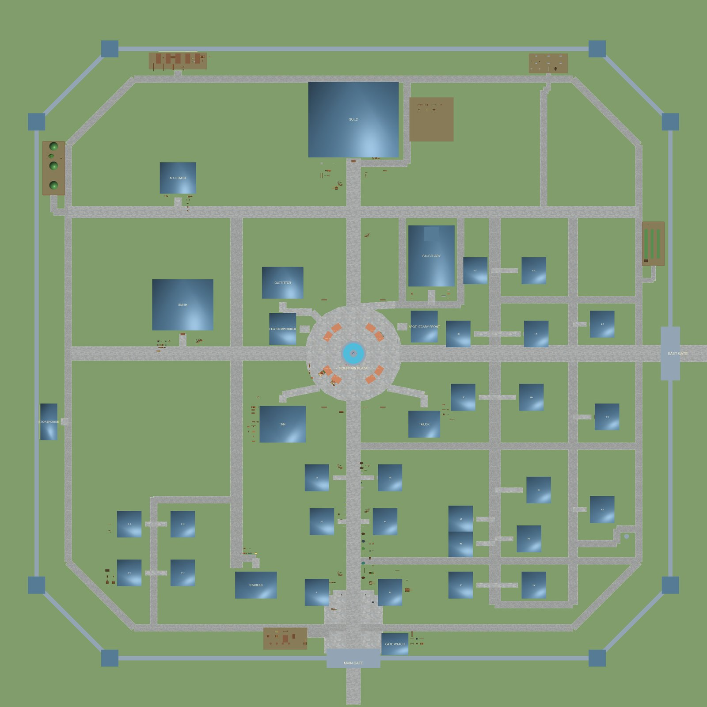
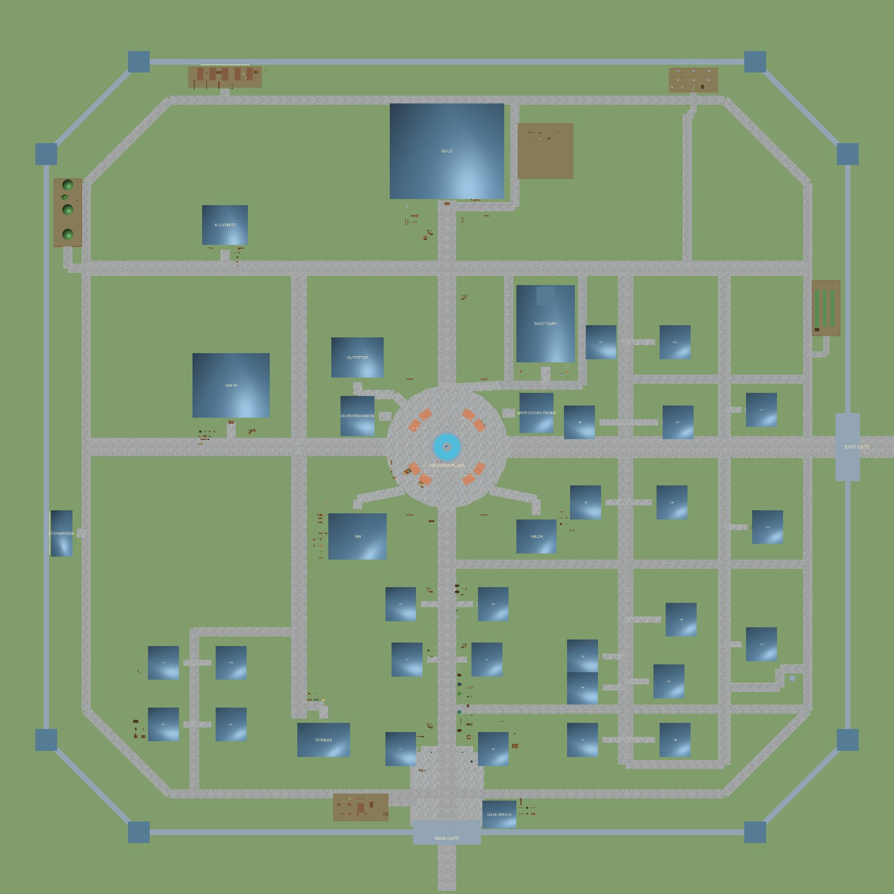
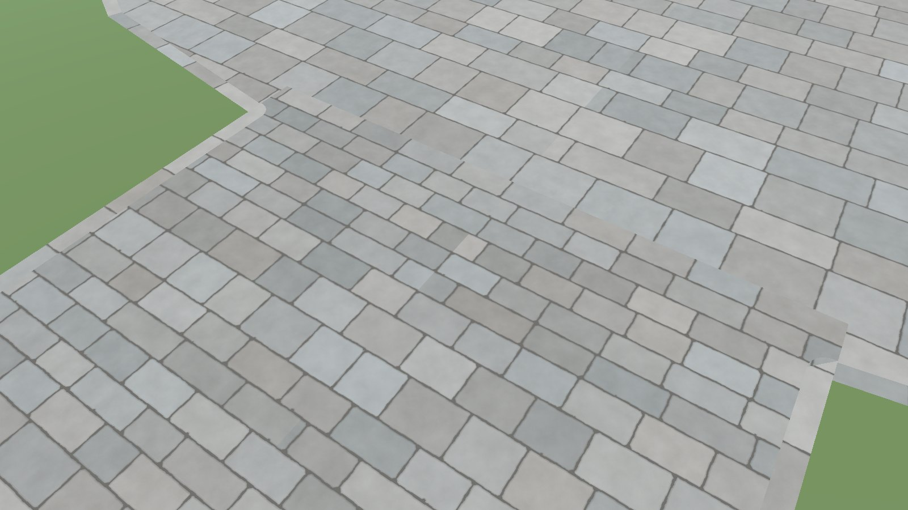
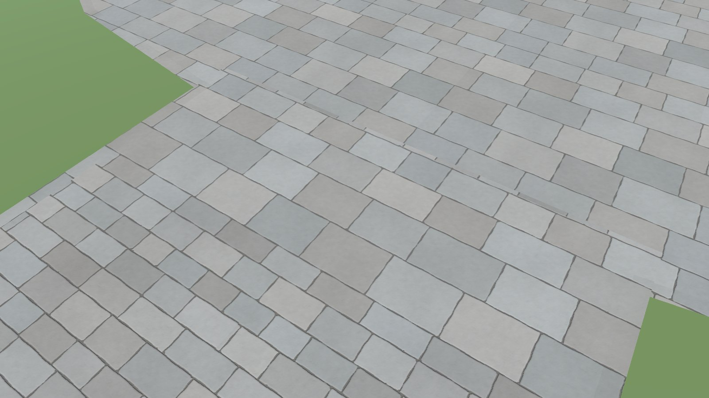
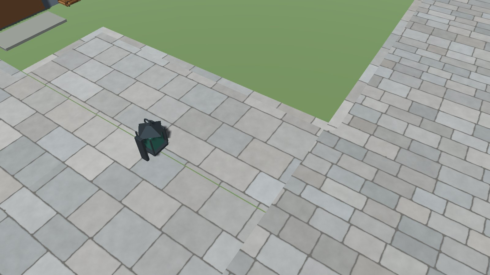
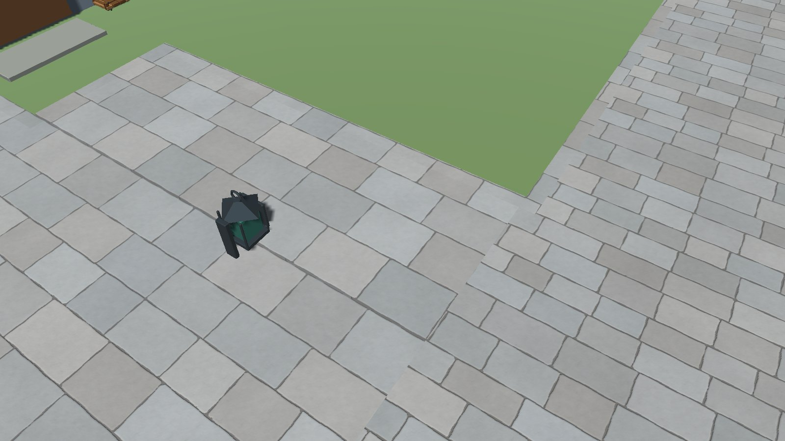
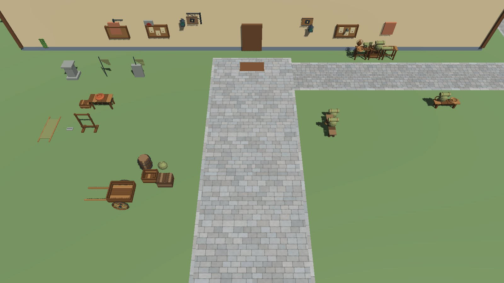
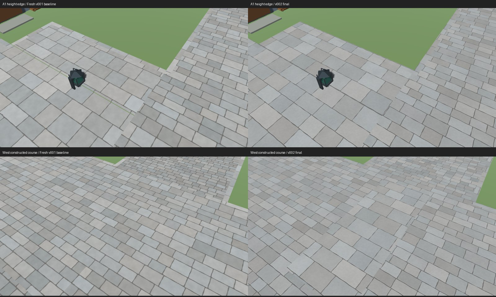

Stone paving, version 2
Roads, alleys and the perimeter lane were rebuilt in four stages from constructed courses of stone, with the old 3, 4 and 6 cm height steps kept and closed at their edges. The layout, the buildings and every prop are unchanged, so from above the town looks the same; the difference is in the joints and edges up close.

















- Final town: 367,379 triangles, 34 materials. No gaps or overlaps inside the new paving.
- Not done: a person walking it for feel, and a full check for flicker in motion.
The cathedral — planned
You approved a cathedral for the town today. It has a place in the plot table: north-east of the guild, east of the practice yard, facing the north cross street, with an infirmary, a clergy house and a mortuary chapel around it. It will be plain stone and exterior only at first: no symbols, statues, interior or door you can enter.
| Part | Size |
|---|---|
| Whole footprint | 20 × 42 m |
| Nave | 12 m wide; eave 9.35 m, ridge 12.71 m |
| Two aisles | 4 m wide each; eave 5.35 m, ridge 6.47 m |
| Tower | 8 × 8 m at the north end; top at 22 m (the guild ridge is 17.63 m) |
- Open: whether the tower lines up well with the statue and the guild when seen from the gate has not been checked.
- The other 30 planned buildings include a bunkhouse and stores for the guild, craft workshops, worker cottages, terraces and two plaza-edge shops.